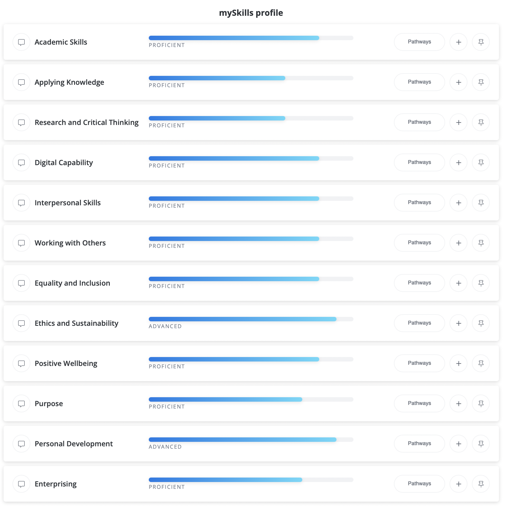

What is MySkills?
MySkills allows students, such as myself, to reflect on, build and exercise on your own skills. You are first provided with a short skils assessment, its like a questionaire, so nothing to be stressed about, about yourself and with your answers, it determines the skills that you have and what you could improve on. Also try to be honest with yourself, as this will give you more accurate results.
What to do after your assessment?
Once you have finished your assesment, you are provided with your strengths alongside some things you could improve on. This will appear on your profile and it will save there. You can then choose which skiils you would like to prioritize and improve on, you can do multiple at once, or one at a time
You can then start to build up a record of the things you have done to boost and develop your skills. You can do so by adding experiences you have done to build on these skills; maybe some extra-curricular activies, or any societies that you have joined too.
There are also a lot of helpful links and information on the MySkills profile section which can help you on your journey to improve on your skills.
How has this helped me?
The image below shows the certain skills that I am good at, alongside some that may need improvement. Hover the mouse over the picture to see it more clearly.
This shows clearly what I need to improve on, which for this instance, is applying knowledge. So, what i have done is I have looked at videos and information online on how to improve on applying knowledge. I would then put this onto my profile and record this down.
I believe this is beneficial for me as its shows evidence of skill development, alongside being able to reflect on your experiences. These are some things that employers look for as it is seen as very valuable. It gives me a higher chance to become employed compared to those who have not used MySkills.
What is SGA?
SGA, also known as The Sheffield Graduate Attributes, allows you to present your skills and attributes that the university have agreed to be beneficial for your employment, personal development and academic success.
This is split into 3 different categories:
- My Learning
-
In order to fully enjoy a subject and achieve success, you must have the required skills to facilitate your learning and know how to apply knowledge.
- My Impact
-
Being able to communicate effectively, being respectful and collaborating well, gives a positive impact towards others.
- My self
-
Having the ability to develop oneself and maintain a positive wellbeing is crutial and will help in the long run.